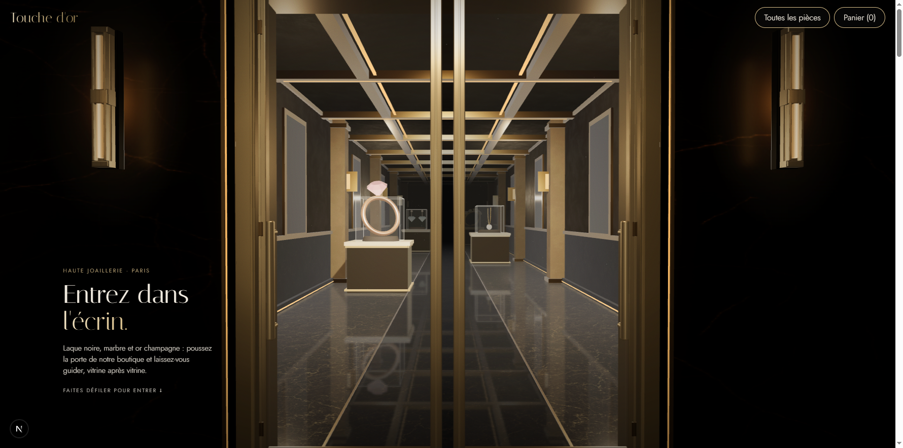
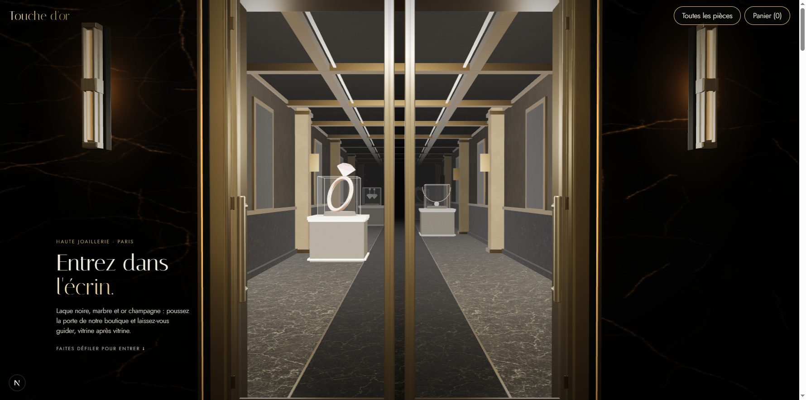

Maison noire — éclairage, ombres et reflets
Captures réelles du navigateur aux mêmes étapes du parcours. Déplacez le séparateur pour comparer l'ambiance. Les géométries et matériaux des vitrines, la caméra et les animations restent identiques ; seules les conditions d'éclairage et les effets de sol changent.


AvantAprès
Textures et HDRI CC0 : ambientCG et Poly Haven. Provenance et licences. Compte rendu.